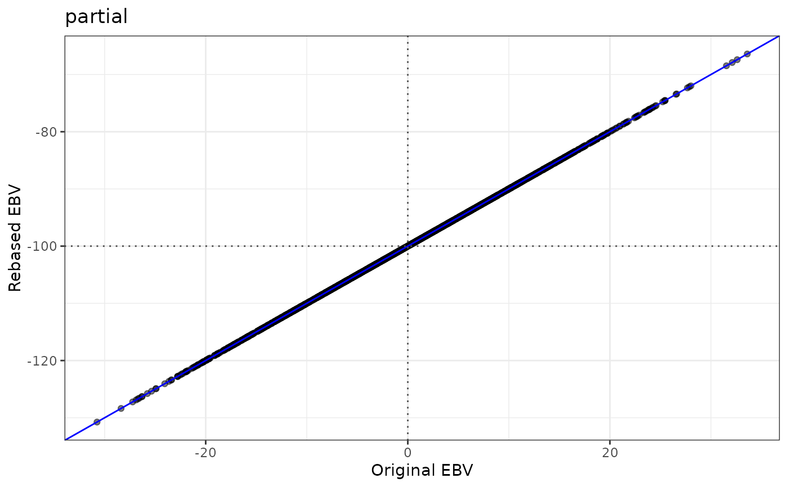

Subtracts from the EBVs of all animals the mean EBV of a base population, so
that the base population has a mean EBV of 0. This is done for each EBV
column of data, each with its own corresponding base-population mean.
Alternatively, a fixed constant_value is subtracted from all EBVs (one per column).
Optionally, scatter plots of the rebased EBVs on the original EBVs are
returned.
Arguments
- data
A data frame with animal IDs in column 1 and EBVs in the other columns, one column per trait, all numeric. A data.table or a tibble also works.
- base_pop
Optional data frame with the IDs of the base-population animals in column 1. Every ID must be present in
data. Provide eitherbase_poporconstant_value, not both. Defaults toNULL.- constant_value
Optional numeric vector: the values subtracted from the EBVs, with one value per EBV column, in the order of the columns of
data(the first value is subtracted from the first EBV column, and so on). It must have exactly as many values as there are EBV columns. Provide eitherbase_poporconstant_value, not both. Defaults toNULL.- plot
Logical. If
TRUE, also return a ggplot2 scatter plot of the rebased EBVs on the original EBVs for each column, with dotted lines at the mean of each. Defaults toFALSE.- verbose
Logical. If
TRUE, report with messages the number of animals and, per column, what was subtracted (and, withbase_pop, the mean EBV of the base population before and after rebasing). Defaults toFALSE.
Value
A list with two elements, rebased_ebv and plots.
rebased_ebv is a data frame with the same columns and row order as data,
with the rebased EBVs (a plain data frame, also when data is a data.table
or a tibble).
plots is NULL when plot = FALSE. When plot = TRUE, it is a named list
with one ggplot object per EBV column, so the plot of a column called
partial is res$plots$partial.
Base population
For each EBV column, the mean EBV of the base-population animals is subtracted from the EBVs of all animals. Every animal's EBV is shifted by the same amount, so the relative differences between the EBVs of animals do not change. Similarly, the correlations and the regression slopes do not change. Thus, only the mean EBV of each trait shifts, not the relative values. The base population ends with a mean EBV of 0 in every column.
Constant value
With constant_value, each EBV column has its own value subtracted, in the
order of the columns: the first value from the first EBV column, the second
from the second, and so on. There must be exactly one value per EBV column;
values are never repeated for several columns.
Use with care: as no base population is used, the function does not set any group
of animals to a mean of 0. A group of animals will have a mean of 0 in a column
only when the value subtracted from that column is the mean EBV of the group,
for example a base-population mean computed beforehand.
Plot
The grey line has slope 1. The blue line is the regression of the rebased EBVs on the original EBVs: its slope is 1 and its intercept is minus the value that was subtracted.
Animals, IDs and errors
IDs are matched as text, with numbers written in full (100000, never
1e+05), so 1 and "1" are the same animal. The function stops with an
error when the IDs in data or in base_pop are missing or duplicated
(a duplicated ID would silently weight the base-population mean), when
base_pop has no animals or has IDs that are not in data, or when any EBV
in data is missing or infinite (a missing EBV would also leave the
base-population mean undefined).
Examples
ebv <- toy_validation[, c("id", "partial", "whole")]
# the animals of the first cohort are the base population
base <- toy_validation[toy_validation$group == "cohort_1", "id", drop = FALSE]
res_base <- rebase_ebv(ebv, base_pop = base)
rebased <- res_base$rebased_ebv
head(rebased)
#> id partial whole
#> 1 1 -5.7118120 -8.360114
#> 2 2 -2.4106834 -1.126707
#> 3 3 15.4681388 10.685714
#> 4 4 0.5944885 7.161736
#> 5 5 1.1819522 1.777127
#> 6 6 17.0308284 11.686281
# the base population has a mean of 0 in every column
round(colMeans(rebased[rebased$id %in% base$id, c("partial", "whole")]), 8)
#> partial whole
#> 0 0
# rebase against one constant value per column (100 for `partial`, 90 for
# `whole`), with a plot for each column
res <- rebase_ebv(ebv, constant_value = c(100, 90), plot = TRUE)
res$plots$partial
